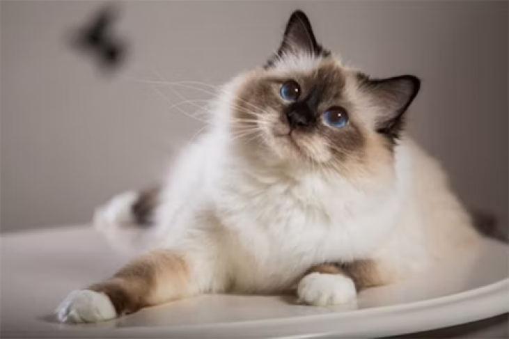

Hellig Birma

Kendetegn:
Blå øjne, hvide poter og ansigtsmaske
Størrelse:
Medium
Pelspleje:
Moderat. Skal reddes i fældeperioder
Temperament:
Meget social, legesyg, familiekat
Gennemsnitlig levealder:
12-16 år
Personlighed
Birmaen er smuk i både sind og skind. Den er normalt både kælen og tillidsfuld, og den er meget nysgerrig. Den er ofte meget legesyg, selv som voksen.
Den er meget glad for sin familie, og den assisterer ofte gerne sit menneske med dagens gøremål. En birma, som går helt alene dagen lang uden selskab, er ofte en ulykkelig birma.
Har man lange arbejdstider, er det en god idé med en legekammerat. Det behøver ikke nødvendigvis at være en anden birma. Dens venlige sind gør, at den let slutter venskab med andre katteracer eller f.eks. hunde.
Selv om dens udseende er meget eksotisk, er der skam en "rigtig kat" indeni. Hvis man lader sin birma få adgang til haven, kan den sagtens fange mus og klatre i høje træer lige som andre katte. Den har dog ikke noget stort ude-behov, og mange birmaer lever glade og tilfredse som lejlighedskatte hele livet.